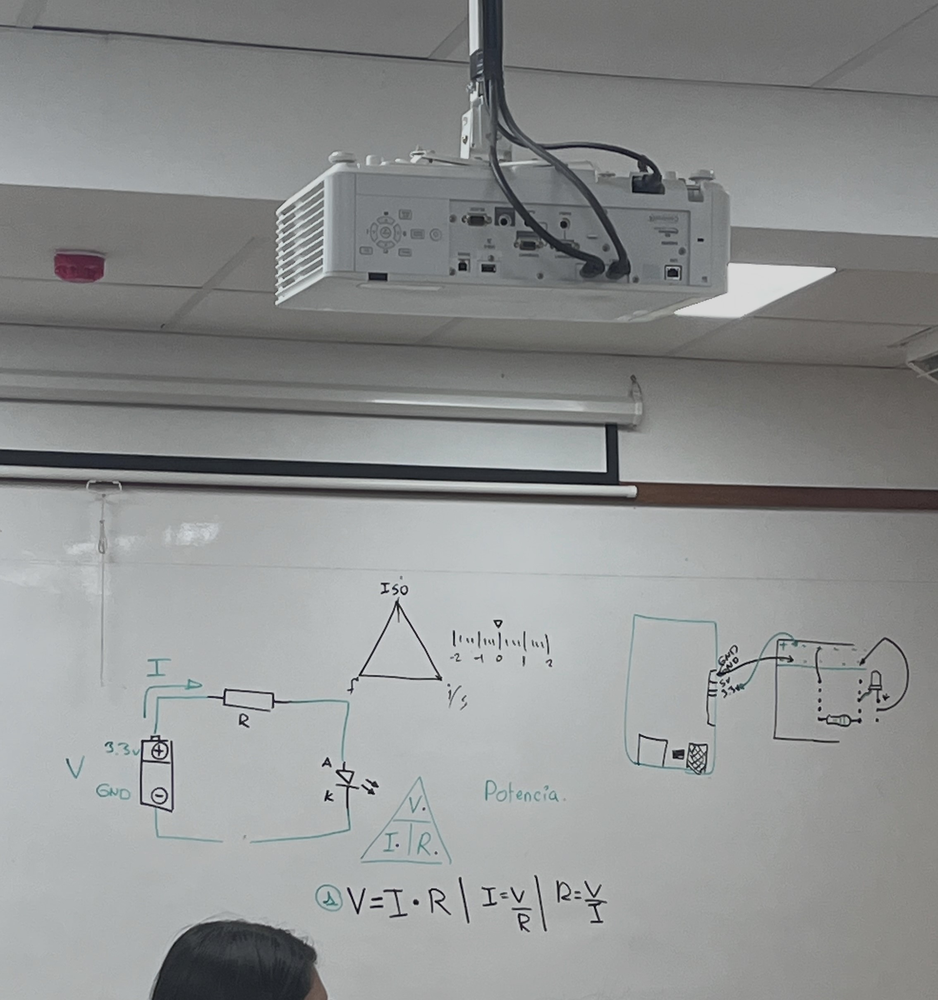
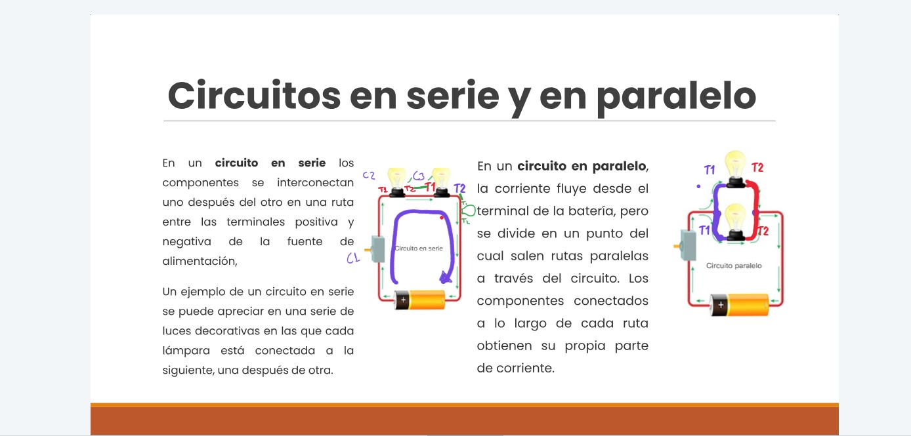
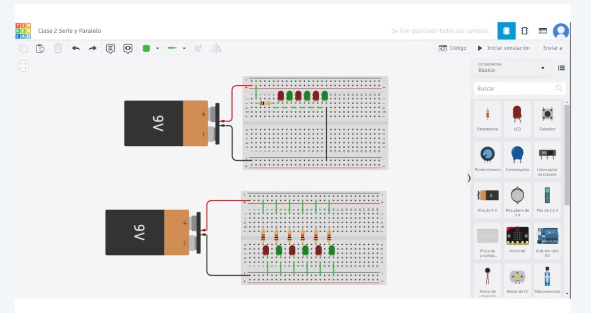

Semana 6
Sesión 10 y 11


En esta semana vimos un poco de teoría introductoria sobre conceptos de electrónica básica.
El profesor explicó sobre la Ley de Ohm y sus fórmulas.
Unidades Fundamentales Eléctricas
- Resistencia "R"
- Potencial "V"
- Corriente Eléctrica "I"
- Inductancia "L,M"

En clase virtual nos enseño sobre los circuitos en serie y paralelo y como poder diferenciarlos.

Entramos a la plataforma de TINKERCAD para practicar el armado de circuitos:
Circuitos Eléctricos
- Circuito en Serie: La corriente es igual en todos los componentes/Los voltajes son diferentes en todos los componentes.
- Circuito en Paralelo: Las corrientes son diferentes en todos los componentes/ Los voltajes son iguales en todos los componentes.
Semana 7
Sesión 12 y 13


En esta clase, el profesor dejó como encargos diversos ejercicios prácticos sobre el Arduino. También, dedicamos un tiempo de clase en el proyecto grupal, definiendo cual seria el proyecto final elegido y que lista de componentes necesitariamos para llevarlo a cabo. Nos brindo diversas tiendas donde podiamos conseguir los implementos tales como Mastertronics, Naylamp Mechatronics, Saisac, etc.
Durante la clase virtual se dejo el encargo de realizar un curso sobre Inteligencia Artificial de la pagina IBM Skills con el objetivo de tener mayores conocimientos sobre la IA y sus contribuciones.
Semana 8
Sesión 14 y 15

En esta semana cada grupo tenia que llevar los materiales que se necesitaban para sus proyectos. Mientras que en la clase en modalidad virtual, el profesor estuvo explicando el Código ASCII empleado la interfaz de Tinkercad, nos enseñó como armar un circuito.